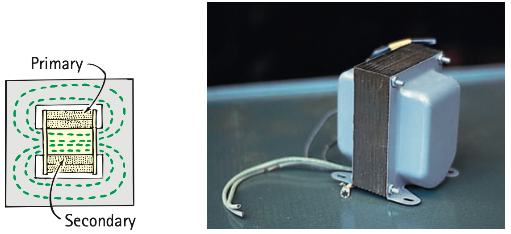

1. What is the main purpose of a transformer?
2. Name the transformer coil connected to the input source.
3. State the ideal-transformer power relationship used in this unit.
4. Which device mainly converts electrical energy into mechanical motion: motor or generator?
5. Why must a real electromagnetic device have an energy input if it delivers useful energy output?
6. Use the practical-transformer source figure to identify the primary side, secondary side, and shared magnetic path. Explain why the coils need not be electrically connected for energy transfer.

7. A transformer has 200 primary turns and 800 secondary turns with $V_p=15\text{ V}$. Determine $V_s$ and classify the transformer.
8. An ideal transformer delivers approximately 120 W at 30 V on the secondary. Use $P=IV$ to determine the secondary current.
9. A speaker receives electrical energy and produces sound by moving a cone. Trace the energy transformation and identify where magnetic force acts.
10. A motor and generator have similar coil-and-field components. Compare their input and useful output energy forms.
11. A student says, “A step-up transformer makes extra energy because its output voltage is larger.” Critique the claim using turns ratio, current, and ideal power conservation.
12. Compare a speaker and microphone as related electromagnetic systems. Explain how their energy transformations and motion/current roles are reversed.
13. A transformer primarily
14. A transformer with more secondary turns than primary turns is a
15. For an ideal transformer, the best power statement is
16. A 12 V device drawing 4 A uses electric power of
17. Which device primarily converts motion into electrical energy?
18. Which device primarily converts electrical input into mechanical rotation?
19. Why does higher transformer voltage not imply free extra power?
20. A magnet-only machine claims continuous output with no input. What principle should be checked first?